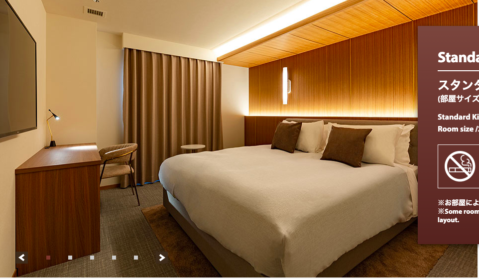
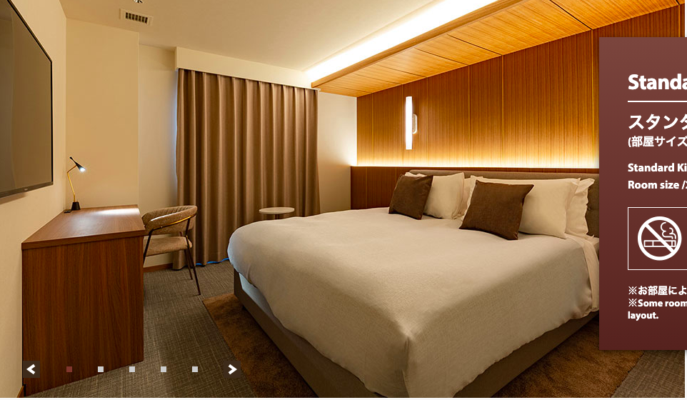
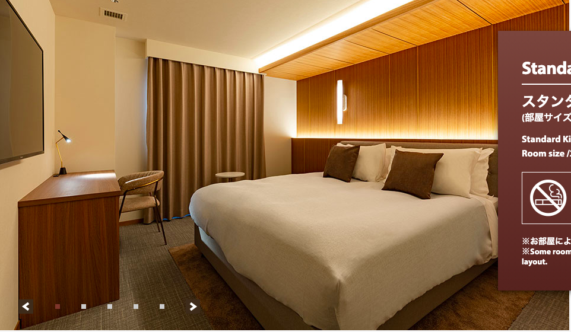
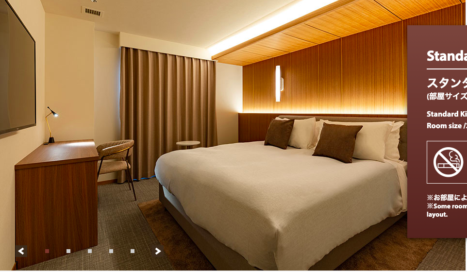
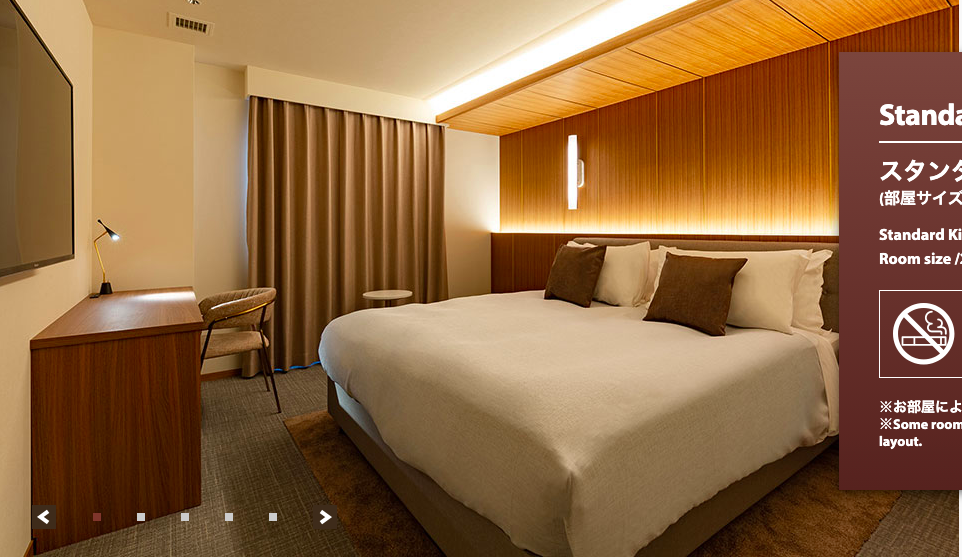

はじめに
切符について
12.4
行きの新幹線について
中洲屋台
博多ランチ食べたいもの
宿について
12.5
帰りの新幹線について
Published with HonKit
宿について
宿泊する宿について
ザ・ワンファイブテラス福岡
公式リンク
予定しているプラン:【禁煙】スタンダードキング
合計18,900円(税込)(1人あたり9,450円・税込)
所在地：〒810-0003 福岡県福岡市中央区春吉3-14-36
地下鉄「博多駅」→「中洲川端駅」1番出口より徒歩8分(650m)
<メモ>
とりあえずチェックイン時間15:00で予約済み
※地下鉄では乗り放題券が使えないため、自分たちのICカード使用

results matching "
"
No results matching "
"
 


